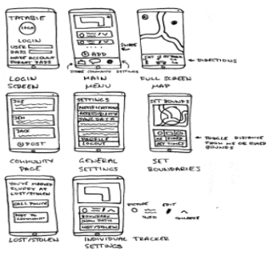
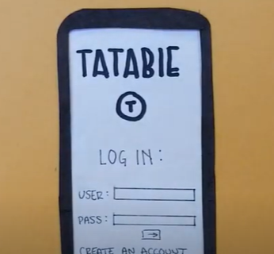
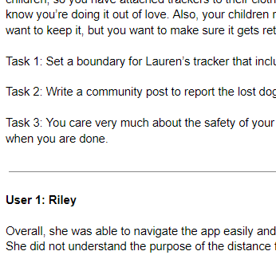
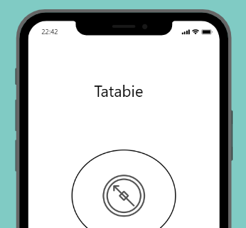
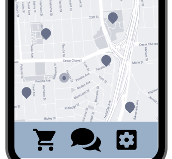

Problem Statement: Trackers

Although trackers designed for specific items like cars or pets can be purchased, there does not seem to be a way of integrating these items into a single system.
Affinity Diagram: Trackers

My team and I used an affinity diagram to aid in the brainstorming procress for our tracking app project.
Personas: 4 Personas for Trackers

4 Personas that illustrate different ways that our tracker app can be used.
Storyboard: 4 Comics for Trackers

Four comic strips that show various uses of a tracker app.
Sketches: Tracker App
Several rough sketches that show brainstorming for potential solutions for the tracker problem and one more polished sketch (first).
Paper Prototype: Tatabie Tracker App
A functional paper prototype that can be used to consider several different design solutions and test various user interfaces.
Usability Testing: Tatabie Tracker App
Usability testing using the paper prototype was conducted on two different potential users. The participants were given a scenario and asked to interact with the app to accomplish 3 different tasks. Feedback was recorded.
Lofi Prototype: Tatabie Tracker App
A very rough, preliminary sketch of the Tatabie Tracker App using proto.io.
Hifi Prototype: Tatabie Tracker App
A more polished sketch of the Tatabie Tracker App using proto.io.
Final Video: Tatabie Tracker App
A video demonstrating the use of the Tatabie Tracker App as well as briefly discussing a potential user base.